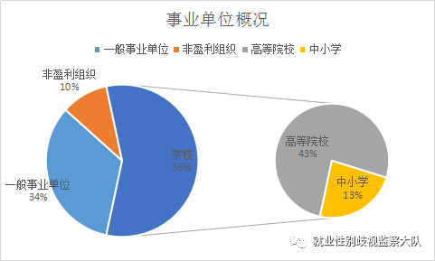

请快速看完下面两段话，然后直奔重点：
党政机关，狭义上是指中国共产党机关和国家行政机关，广义上包括党的机关、人大机关、行政机关、政协机关、审判机关、检察机关。也包括各级党政机关派出机构、直属事业单位及工会、共青团、妇联等人民团体。
事业单位是指受国家行政机关领导，没有生产收入、所需经费由公共财政支出、不实行经济核算、主要提供教育、科技、文化、卫生等活动非物质生产和劳务服务的社会公共组织，事业单位接受政府领导，是表现形式为组织或机构的法人实体。
总之，就是拿人民的钱，为人民办事的。这样的机关、单位理应洁身自好，带头遵守各项法律法规（包括但不限于《劳动法》、《就业促进法》、《法律权益保护法》），人民是不允许它们在招聘过程中歧视人民（存在性别歧视）的！！！
然而，根据@就业性别歧视监察大队（新浪微博）2016年-今，粉丝后台投诉的信息显示，这些机关、单位的守法情况可真是让人大跌眼镜。
显 性 歧 视
大队累计收到48起关于机关、事业单位的投诉，并通过各种途径进行了曝光和跟进，包括30家事业单位，18家行政机关，但这应该仅是这类组织就业性别歧视的冰山一角。
第一部分：事业单位

（一）高校篇
很多粉丝（学生）在投诉校园招聘中的性别歧视时，希望对学校名称、辅导员名字等信息保密，然而13家高校在招聘专职教师/党政管理人员/其它人员时表示，我们只要“男生”，生活真是一部电视剧......
犯错被举报不要紧，你可以改嘛。主页君原以为每个高校都能像@浙江大学 一样可以讲道理（浙大表示在明年的招聘过程中会考虑举报人的建议），但是实际情况是像 @漳州理工学院 @西安工业大学 这样拒绝沟通、拒不改正、强词夺理、凑不要脸的高校还是占多数.....
（二）中小学篇
“要男老师，男老师优先，免费男性师范生。你们这样想方设法的降低录用标准，让某些低素质的人混入教师队伍，有考虑过幼女（男）性侵事件会不会增加吗？”
“教师性别比例失衡不利于学生教育成长，难道每个人配了一个爸爸还不够，还要学校再给配一个？”—摘选自网友
（三）一般事业单位篇
事业单位福利好，待遇好，大概率能解决户口，因此比较难考。不过有些岗位，女生根本不用考虑考试难度。报考条件“男性”这两个字，足以否定一个女生接受的所有教育、否定实习过程中积累的所有经验，人为的将她们排斥在某些岗位之外。
（四）非盈利组织篇
就不多评论了，希望你们对得起自己的愿景。不过可能很多机构对未来美好蓝图的设想里并没有女性，在它们眼中女性就应该回归家庭吧，希望它们看看日历，认识到大清已经亡了。
第二部分：行政机关
（一）人社局篇
人社局是受理就业性别歧视举报的单位，但是当它们在招聘中也歧视劳动者时，被歧视者应该怎么办？其实，也并不是申诉无门，你还可以向上一级人社局举报。监管者本身即是违法者，这种尴尬的人设，真的是哗了狗。
（二）法院篇
歧视不分行业，法院招聘也看性别。但是法院毕竟是懂法律的地方，歧视女性也跟别的妖艳贱货不一样。“同等条件下，男性优先”、“适合男性”这都是它们想出来的招聘广告。就问你们对“不得提高对女性的录用标准”这句话有没有正常人的解读能力。
（三）辅警篇
不知道辅警在我国是怎样的级别和工作内容，各个地方都想方设法的阻止女性进入辅警队伍，而且各个地方的招聘要求也不尽相同。有的地方明确只要男性，有的地方表示招聘100名辅警，男性90人，女性10人。歧视重灾区，对女性的数量限制一直没放松过。
（四）其它
希望这些单位在撰写招聘启事时，认真阅读《女职工禁忌从事的劳动范围》，看看自己是否符合要求。符合要求的详细列出来，再做性别限制。
隐 性 歧 视？
第一部分：一则故事
一研究生报考国家某部委，以高分顺利进入面试，失利。不解，询问同本科毕业已在该部委工作的师弟原因。答曰：“该部委倾向于要男生。”
第二部分：神奇的综合调研一？
主页君有一天收到一条私信，让主页君关注一下中共中央对外联络部的公务员招录情况，北京大学、中国人民大学等国内高等学府，甚至哥伦比亚大学等海外名校毕业的女性报考中央外联，结果均不太理想，不知道其间经历了怎样的爱恨纠葛。其中最惨烈的当属下面这个岗位：
综合调研一岗 | 考试和面试人数 | 拟录用人数 | ||
男性 | 女性 | 男性 | 女性 | |
2017 | 9人 | 16人 | 5人 | 0人 |
2016 | 8人 | 22人 | 6人 | 0人 |
今天是五一劳动节，也是@就业性别歧视监察大队 的生日，祝她3岁生日快乐！一个正经的微博，一直在正经的举报，消除就业性别歧视，她（们）一直在努力...
部分图片来源于网络，侵权删除。这已经是主页君能找到的，最不性别刻板印象的配图了，求轻喷...